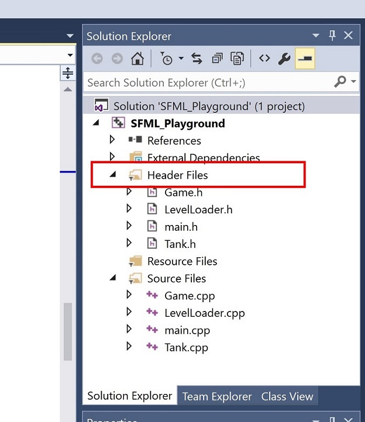
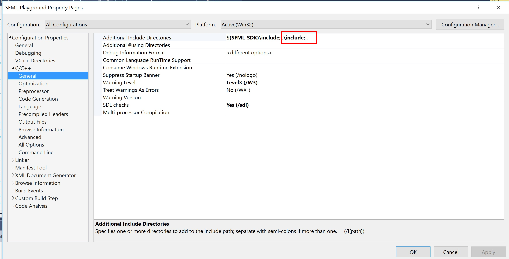

To be completed by: Week 7 (Mon 9/11)
Learning Outcomes:
thor) to an SFML project.Contine with the sample Visual Studio solution 'SFML Playground' from lab 2.
3.1 Reorganising the project structure.
We are going to reorganise our project structure to make it more orderly.
1) Open the project in Visual Studio and remove all the header and source files (right click on each, then Remove but don't delete). Starting inside your solution folder, make an include folder and a src folder.
2) Download the additional files for this lab from here. Copy the files Tank.h and Tank.cpp from this download into your solution folder. In Windows explorer, move all the header files to the include folder and all the source (.cpp) files to the src folder.
3) Make another folder called resources. Inside resources create two further folders called levels and images. Move your image files (.png, .jpg) into the images folder and move the .yaml level file into the levels folder. Now that we have moved our image file (the background) to a new folder, we need to update the relevant entry in the YAML file:
background:
file: ./resources/images/Background.jpg # Sample comment
4) Returning to Visual Studio, note that VS provides filters that allow us manage all the
source files in our project. By default, VS provides filters called Header files and Source files. Here's an example of the Header files filter:

Right click on the Header files filter and choose 'Add->Existing Item'. Browse to your includefolder and add all the header files.
Right click on the Source files filter and choose 'Add->Existing Item'. Browse to your srcfolder and add all the source files.
For large projects, it is useful to create your own custom filters. For example, inside the Header files filter you could create further filters for different aspects of your project, e.g. Sound, AI, Physics etc as appropriate. This structure would again be mirrored inside the Source files filter.
5) Now we need to tell the compiler where to locate our header files (remember, we have moved them in the file system into a folder called Include). Right click on your solution name, then
choose:
C/C++->General->Additional Include Directories
Add the entry ;.\include\;. as indicated below under Additional Include Directories

The semi-colon (;) is used to separate directory paths. The .\include means search under your solution folder for a directory called include, while a . on it's own, means search the current (solution) folder. Why do we need to tell the compiler to search the solution folder? It is because we placed the yaml header files there and the source file that uses it (LevelLoader.h) has been moved from the solution folder into our include folder.
3.2 Building the reorganised project
The additional files for this project are Tank.h and Tank.cpp. We have created a Tank class to manage the creation of the Tank sprite (see member function Tank::initSprites()) and rendering of that sprite (see Tank::render()). There is also a new member function called Tank::update() to handle all updates for our Tank object, such as movement.
Exercise 1: In Game.h, declare the Tank object:
// An instance representing the player controlled tank.
Tank m_tank;
Don't forget to #include "Tank.h" at the top of Game.h.
In the Game constructor function in Game.cpp, initialise the tank object in the member initialiser list like this:
////////////////////////////////////////////////////////////
Game::Game()
: m_window(sf::VideoMode(ScreenSize::width(), ScreenSize::height(), 32), "SFML Playground", sf::Style::Default)
, m_tank(m_texture)
Note how we pass m_texture by reference to the Tank constructor. In fact, the tank texture is not yet loaded, but we will do this shortly. Next, remove any code that creates a Tank sprite from your previous lab - don't forget to remove any unused sf::Sprite or sf::Texture member variables from class Game. Load the sprite sheet you copied earlier as follows:
if (!m_texture.loadFromFile("./resources/images/SpriteSheet.png"))
{
std::string s("Error loading texture");
throw std::exception(s.c_str());
}
Note how this initialises m_texture (which is being used by our tank object). Now position the tank:
// Now the level data is loaded, set the tank position.
m_tank.setPosition(m_level.m_tank.m_position);
Don't forget to open the yaml file and change the path to the background sprite.
Finally, draw (render) the tank. Where should this be done in Game.cpp?
Build and execute the project - you should see the tank and turret rendered. Notice how the rest of the sprite sheet is not drawn. We will see how this works in the next section.
3.3 The Tank class
Let's first consider how the tank base is drawn:
// Initialise the tank base
m_tankBase.setTexture(m_texture);
sf::IntRect baseRect(2, 43, 79, 43);
m_tankBase.setTextureRect(baseRect);
m_tankBase.setOrigin(baseRect.width / 2.0, baseRect.height / 2.0);
m_tankBase.setPosition(pos);
The tank base texture is set from the sprite sheet we loaded earlier. The line:
sf::IntRect baseRect(2, 43, 79, 43);
creates an SFML rectangle from x,y point 2,43 with a width of 79 and a height of 43 pixels. This is then used to specify a rectangular region on the texture (sprite sheet) that designates the area where the tank base appears. We then set the origin and position of the sprite as usual.
Next, the turret is drawn using the same technique. Notice that the turret origin is not set according to the centre of the turret sprite:
m_turret.setOrigin(turretRect.width / 3.0, turretRect.height / 2.0);
The origin of the turret is towards the left hand side as opposed to the exact centre of the sprite - this means when we draw it at the same position as the tank base, it will be offset to the left hand side and look correct.
Tank Movement
Now we consider how to move the tank that roughly approximates the movement of a tracked vehicle. We will need to do some simple mathematical operations and we will use a special library for SFML called Thor (see here).
The required source and library files are inside the zip file you downloaded earlier. Move the Thor and Aurora folders to your include folder, and put the thor library files thor.lib, thor-d.lib into your lib folder.
Copy the Thor runtime library file thor-d.dll into your Debug folder.
Open main.cpp and add the following lines to tell the linker to use the thor library files.
// Add this line under the #ifdef _DEBUG directive (for Debug builds)
#pragma comment(lib,"thor-d.lib")
// Add this line under the #else directive (for Release builds)
#pragma comment(lib,"thor.lib")
Now we have Thor setup, add the following public member functions to Tank.h
/// <summary>
/// @brief Increases the speed by 1, max speed is capped at 100.
///
/// </summary>
void increaseSpeed();
/// <summary>
/// @brief Decreases the speed by 1, min speed is capped at -100.
///
/// </summary>
void decreaseSpeed();
/// <summary>
/// @brief Increases the rotation by 1 degree, wraps to 0 degrees after 359.
///
/// </summary>
void increaseRotation();
/// <summary>
/// @brief Decreases the rotation by 1 degree, wraps to 359 degrees after 0.
///
/// </summary>
void decreaseRotation();
Add the following member variables for control of the speed and rotation of the tank:
// The tank speed.
double m_speed{ 0.0 };
// The current rotation as applied to tank base.
double m_rotation{ 0.0 };
Notice that in our MathUtility header file, we have declared a namespace called MathUtility. Inside this namespace, there are some useful maths functions we will use later in this project. For now, we are just using a constant that is useful when converting from degrees to radians:
double const DEG_TO_RAD = thor::Pi / 180.0f;
Note the use of the thor::Pi constant. Because this constant is in the thor namespace, we need to add the following line to the top of MathUtility.h:
#include <Thor/Vectors.hpp>
Next, add the implementation of the above new Tank member functions as follows:
////////////////////////////////////////////////////////////
void Tank::increaseSpeed()
{
if (m_speed < 100.0)
{
m_speed += 1;
}
}
////////////////////////////////////////////////////////////
void Tank::decreaseSpeed()
{
if (m_speed > -100.0)
{
m_speed -= 1;
}
}
////////////////////////////////////////////////////////////
void Tank::increaseRotation()
{
m_rotation += 1;
if (m_rotation == 360.0)
{
m_rotation = 0;
}
}
////////////////////////////////////////////////////////////
void Tank::decreaseRotation()
{
m_rotation -= 1;
if (m_rotation == 0.0)
{
m_rotation = 359.0;
}
}
You may need to tweak the increment/decrement amounts later.
Exercise 2: In Game.cpp, add the following logic to function Game::processGameEvents()
if the right arrow key is pressed, increase the rotation angle of the tank.
if the left arrow key is pressed, decrease the rotation angle of the tank.
if the up arrow key is pressed, increase the tank speed.
if the down arrow key is pressed, decrease the tank speed.
Exercise 3: In Tank::update(), we want to calculate the new position and rotation of the tank in response to keyboard input. The formula for an approximated tracked vehicle movement can be expressed as follows:
new x position = current x position + cos(rotation) * speed * (delta time / 1000)
new y position = current y position + sin(rotation) * speed * (delta time / 1000)
move tank base to this new position
Additionally, you will need to update the rotation angle of the tank base to the value of the member variable holding the rotation value.
Build and execute the project.
Problem 1: Does the tank move in response to keyboard input? If not, see if you can fix the problem.
Problem 2: Assuming the tank base moves ok, what happens to the turret? See if you can coordinate the movement of the turret and the tank base.
Problem 3: What happens to the turret when the tank base rotates? See if you can fix this problem.
The final issue we have is we cannot rotate and accelerate/decelerate at the same time, in other words our current approach does not allow for processing multiple key presses. We will fix this in the next lab.
Exercise 4: At the end of Tank::update(), apply a small frictional force to the tank so its speed will slowly decrease. For example, if the tank is currently moving, it should gradually come to a rest with no further player input. Use the std::clamp algorithm to ensure the speed is kept within a sensible min and max (hint: you might want to define a constant in Tank.h for the maximum allowable speed). You can find examples on usage of std::clamp here. Note: because std::clamp is a language feature introduced in C++17, you need to enable C++17 language features in Visual Studio. To do this, right click your project name, then choose Properties -> C/C++ -> Language. On the right hand side of the property pages for Language, there is an entry C++ Language Standard. Change this to ISO C++ 17 Standard (/std:c++17)